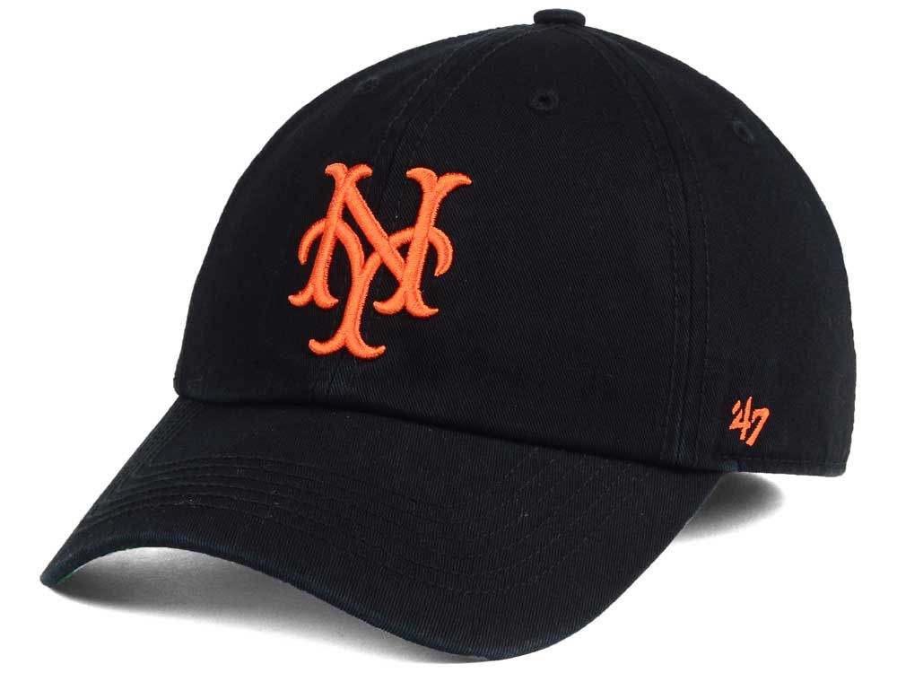
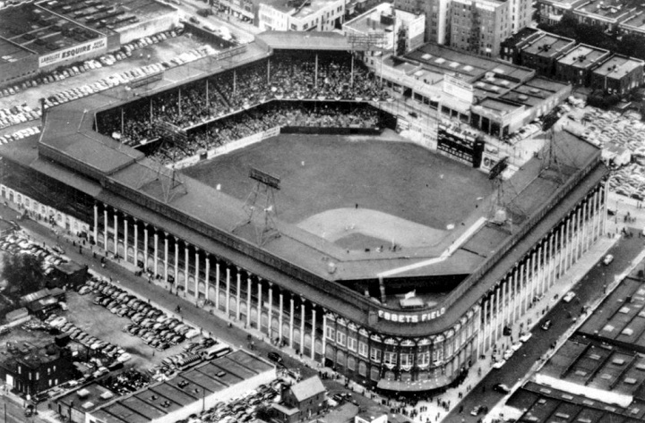
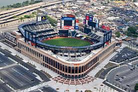
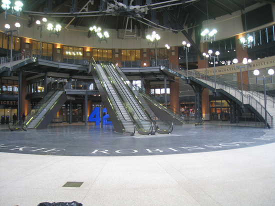

History of the Mets
The Mets began their first season in 1962. They were originally part of a third league, the Continental League, before it was consumed by Major League Baseball. The Mets were established as part of National League and began play at Shea Stadium in 1964. The blue and orange colors of the Mets are symbolic because it represents the time in which the Dodgers and Giants were once New York teams before their move to California. How the NY is shaped on Mets caps follows how the old Giants letters were formed.

The Mets played at Polo Grounds, the original stadium in which the New York Giants played baseball. Then, the Mets moved their home to the newly built Shea Stadium from 1964 to 2008. In 2009, the Mets would move to their new stadium, Citi Field, which is located in what used to be the parking lot of Shea Stadium. Citi Field was made in the image of how Ebbets Field, the Brooklyn Dodgers old baseball field, was.


Keeping true to their roots, the Mets attempted to keep their image of the past relevant with the new ballpark. They dedicated the entrance to Citi Field after Jackie Robinson, who entered the league as a Brooklyn Dodger. They named a bridge after William Shea, the attorney who brought baseball back to New York in the 1960's.
